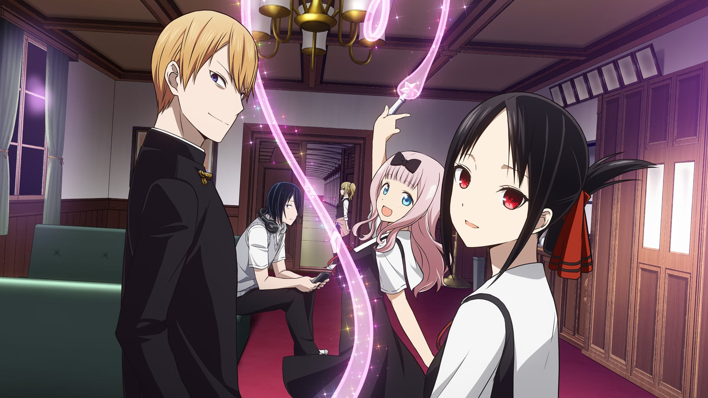

Лучшие Аниме Этого Сезона
Доктор Стоун 2 сезон

(Уже ВЫШЕЛ!!!)
Премьера анимационного сериала Доктор Стоун (Dr. Stone) состоялась на канале «Tokyo MX» и приключенческий, научно-фантастический сериал обрел
невероятную популярность в кратчайшие сроки. Гибель земной цивилизации стала почти реальностью и спасти человечество может только юный ученый
вместе с ближайшими друзьями.Популярность аниме Доктор Стоун растет и дата выхода 2 сезона запланирована на январь 2021 года.
Коротко о сюжете
Прекрасная девушка Юдзуриха Огава покорила сердце старшеклассника Тайдзю Оки. Он решил открыть ей свои чувства,
но в этот-же момент произошло нечто непостижимое. Ослепительная вспышка света осветила Землю и каждый человек
на планете оказался закован в каменный панцирь. Эта дата — 5 октября 5738 года стала гибельной для цивилизации.
Только некоторым удалось избежать заточения. Один из них — Сэнку Исигами. Сэнку, используя все свои научные знания,
стремится отыскать формулу вещества, погубившего людей, что-бы вернуть цивилизацию к жизни.
Смотреть Здесь
Anime Go
Jut.su
Кагуя, в любви как на войне 3 сезон

Романтическое многосерийное аниме «Госпожа Кагуя: в любви как на войне»
с элементами комедии очень востребован у фанатов манги. История, которую
в виде манги стали выпускать в 2015 году, быстро завоевала сердца и мысли
преданных фанатов со всего света. Аниме по ее мотивам сразу стало одним
из бестселлеров. Дата выхода 3 сезона комедийного аниме «Госпожа Кагуя:
в любви как на войне 3 сезон» запланирована на май 2021 года.
Коротко о сюжете
В Академии Сютиин обучаются наследники высокопоставленных чиновников и отпрыски
богатых семейств страны, которой выпускникам ВУЗа придется руководить. Студентка,
Кагуя Синомия и молодой человек, Миюки Сироганэ, два самых ярких таланта в
Академии. Кагуя – сказочно богата и невероятно умна: все первые места, призы
и награды по любым видам деятельности принадлежат ей.
Главные герои Госпожа Кагуя: в любви как на войне
Миюки возглавляет студенческий совет и все его время занимают учебные
дисциплины. Они всего лишь однокурсники, но окружающие считают, что из
талантливых молодых людей получилась бы отличная пара. На самом деле,
они оба скрывают свои чувства и слишком независимы, чтобы сделать шаг
навстречу друг другу.
Атака Титатов: Финал

(Уже вышло 7 серий! Уу~)
С самых древних времен люди отчаянно противостоят злобным великанам,
которых люди прозвали титанами. Данные существа обладают огромными
размерами и крайне злобны и жестоки по отношению к людям. Не обладая
интеллектом, они видят в людях лишь добычу. Хотя ни один человек не
может противостоять им физически, все же находятся два отчаянных
героя – Эрен и Микаса, которые готовы пойти на все, чтобы отомстить
титанам за смерть своей матери.В декабре 2020 года ожидается дата
выхода продолжения и последнего сезона знаменитого и очень популярного аниме «Атака титанов».
Данный медийный проект очень понравился зрителям и в сети можно прочесть
множество комментариев и обсуждений о каждой серии сериала.
Коротко о сюжете
Прошло уже более ста лет после первого контакта людей с титанами.
Чтобы хоть как-то обезопасить себя от злобных и беспощадных тварей,
люди возводят огромные стены. Но их усилия оказываются тщетными.
Один из титанов разрушает стену и на глазах главных героев – сводных
братьев Микасы и Эрена, убивает и съедает их мать. Братьям удается
спрятаться и спастись, но с этого дня они вступают на дорогу войны
со злобными великанами. Особую ненависть к титанам испытывает Эрен,
который является более впечатлительным и эмоциональным. Микаса, хоть
и является более спокойным и непроницаемым, решает следовать за братом.
Смотреть Здесь
Anime Go
AniZerro Online
О моем перерождении в слизь 2 сезон

«О моем перерождении в слизь» 2 сезон может стать одним из наиболее ожидаемых продолжений
аниме, ведь 2 сезон можно смело назвать таковым. Благо, премьеру второго сезона обещают
уже в конце января 2021 года, правда, пока не названа точная дата выхода. Постараемся вспомнить все основные моменты, касающиеся аниме в целом.
Коротко о сюжете
Однажды офисный работник Сатору Миками был убит после того, как его ударили ножом. Он просыпается в пещере
в незнакомом фантастическом мире, чтобы обнаружить, что он был перевоплощен в слизь, обладающую
различными навыками, сформированными из его последних мыслей перед смертью. Исследуя пещеру,
приобретая по пути новые навыки с помощью великого мудреца, пребывающего в его сознании, слизь
встречает и умудряется подружиться с древним драконом по имени Вельдора, который был запечатан
в пещере много веков назад.
Обещанный Неверленд, 2 сезон

(Уже вышел~)
События второго сезона начинаются с продвижения Эммы, Рэя и других детишек.Jни сталкиваются с новыми
видами животного мира, которые попытаются съесть их, и другими трудностями, которые путем логических соображений
и смекалки преодолеваются(+ у них была книга от Минервы, в которой было указано как действовать в определенных ситуациях).
Так же за детьми выслали группу ******,ведь они не могли просто так упустить товар такого качества.
Коротко о сюжете
Действия разворачиваются в 2045 году. Эмма, Норман и Рэй — самые яркие дети в приюте «Благодатный Дом».
Под покровительством Изабеллы, женщины, которую они называют «мамой», все дети наслаждались комфортной
жизнью. Хорошая еда, чистая одежда и прекрасная окружающая среда — что еще может пожелать ребёнок?
Сиротам разрешено делать всё, что они захотят, за исключением выхода за пределы ворот, которые соединяют
дом с внешним миром. Однажды в роковую ночь воспитанницу по имени Конни отсылают для удочерения, но Эмма
и Норман следуют за ней, заметив, что она оставила свою плюшевую Зайку в доме. Они находят Конни мертвой
и узнают правду о назначении приюта, где человеческие дети воспитываются как... А как кто вы узнаете в самом аниме
Смотреть Здесь
Anime Go
AniMedia
Отзывы об аниме
Бездомный Бог
Shurka80
Бездомный Бог я посмотрел 3 года назад и данное аниме мне преимущественно понравилось, очень легкое
аниме на единичный просмотр.
Бездомный бог - это фэнтези аниме в котором повествуется о боге-бомже с легкомысленным характером,
присутствует много юмора, отличная рисовка, не самый интересный местами скучный сюжет тем не менее
аниме было приятно смотреть. Аниме легко и лайтово смотрится, этакое геройское фэнтези.
02des02
В 1 сезоне сильно растянули историю Юкине
Всем привет! Хочу поделится своим мнением об этом аниме-сериале. Я посмотрел все 2 сезона и,
так сказать, кайфанул по большей части от 2 сезона, сейчас объясню почему.
Но перед этим я хотел бы назвать главных героев: бог Ято-бездомный бог войны готовый выполнить
любую просьбу за 5 ен; Юкине- священное оружие Ято; Хиёри- девушка, которая стала полупризраком
из-за аварии. В 1 сезоне было чуть скучновато, так как по большей части там рассказывали про Юкине,
конечно про главных героев тоже шла речь, но не так много.
Доктор Стоун
АлексВоронеж
Это мой первый обзор на аниме, поэтому не судите строго, и, не смотря на то, что уже просмотрел очень
и очень много аниме, начать я решил всё-таки с доктора Стоунчика. В этом аниме можно выделить и плюсы
и минусы, о которых я сейчас более детально распишу.
Первый плюс - новаторство. Режиссер Ино Синъя вошёл в мир аниме именно этим произведением, так что он
ещё не подвергся какой-либо клешированости, и это аниме накидывает на нас это чувство новизны, так давно
уже забытое. И я говорю сейчас о многом - не до конца идеальный герой, "каменный век", популяризация
науки - где сейчас можно такое встретить?
2002sasha2002
За 2019 год вышло не мало хороших аниме, но многие из них не цепляют.
Не хватало, что-то, что могло зацепить.
Я долго думал, что данное аниме будет обычным интересным, но проходником...
Но начав смотреть дальше, понял, что очень сильно ошибался, по ходу просмотра начал понимать какая же наука классная!
Мне кажется данное произведение понравится людям, которые учатся сейчас в школе, благодаря этому аниме вы поймёте,
что наука это не так уж нудно.
Так же, сие аниме, может зарекомендовать себя любителям науч попа, что тоже своего плюс.
Паразит
Админь
Аниме невероятное, просто нет слов. Аниме бывает разным: Смешным, Страшным, Грустным, но много ли на свете аниме которые учат жизни?
Данное аниме как раз входит в эту категорию. В аниме присутствует: Психология, Философия и другие вещи, которые обычно
не затрагиваются в аниме. В данном Шедевре обсуждается Жизнь. ТАк же, на протяжении всего аниме, Главный Герой Взрослеет на глазах.
В общем Аниме обязательно к просмотру всех без исключения, кто старше 12 лет. Аниме учит жизни, и из него можно много узнать.
Otaku-800
Я смотрю аниме крайне редко и не все подряд, как раньше. Не каждое аниме достойно внимания людей. Но это и правда учит жизни.
Вкратце о сюжете. Школьник по имени Шиничи становится мишенью для паразита. Но благодаря своей проворности букашка не смогла
съесть его мозг и осталась в руке. Но что теперь делать паразиту и человеку в одном лице?!
ниме интересное, поучительное для интеллекта. Одно но так как много жестокости и кровищи в аниме, смотреть детям только лет с 14!
Сайты для просмотра